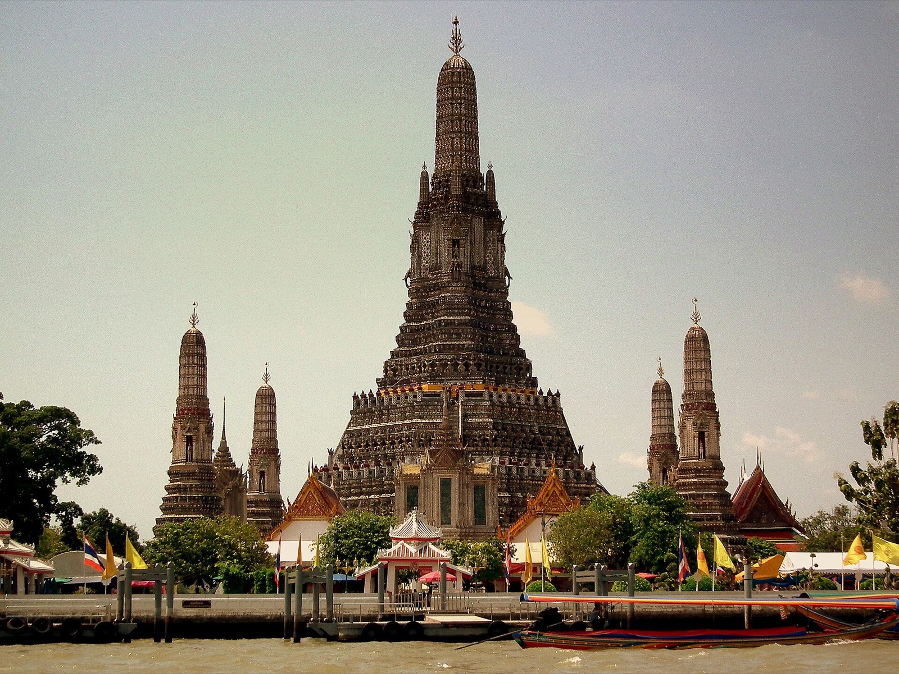
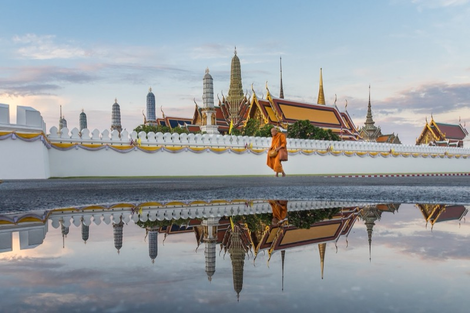
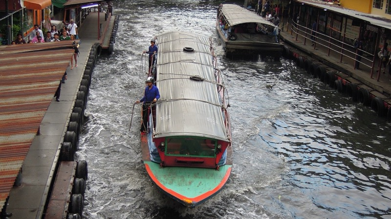

08:00
Factory Coffee（坐下來喝）
- 目的
- 今天可以真的坐下來喝一杯。這間拿過泰國全國咖啡師冠軍，Pradit Manutham 那邊是他們自己的烘豆廠。
- 怎麼玩
- 點手沖單品看今天豆單，或者 Dirty。可頌配咖啡當第一份早餐。
- 注意
- 08:00-16:00
9/26 週六
她原本的老城整包，全部保留。Chom Arun 排在泰拳前看日落與打燈。



她原本 9/25 的老城區整包搬到今天，全部保留。有三個因為時間打架而搬到別天的：ICONSIAM 跟湄南河夜船 → 9/27（那天時間充裕）、Tichuca → 9/25 晚上。Chom Arun 一定要排在泰拳「前」，因為它 21:30 關門，而且 18:20 日落＋鄭王廟打燈剛好接上。
她清單裡的按摩放這裡。Tichuca 已經在 9/25 晚上做掉，今晚不用再跑 Thonglor。
最順 / 從拳場走 10 分就到
深夜版 / 曼谷最好的一條調酒街，走路互達
累了就回去，明天還有一整天